sc-js
.app
◉
Discovery
⬡
Topology
⊞
Viewer
Ready
About
Seeds
Seed IP(s)
?
Starting IPs for discovery. The engine begins SNMP crawling from these addresses and follows CDP/LLDP neighbor relationships outward. Comma-separated for multiple seeds.
SNMP Credentials
Community String(s)
?
SNMPv2c community strings, comma-separated. Tried in order until one succeeds. First working credential is cached per
/24
subnet so neighbors skip credential cycling.
▸
SNMPv3
v3 Username
Auth Password
Priv Password
Auth Protocol
SHA
MD5
SHA-224
SHA-256
SHA-384
SHA-512
Priv Protocol
AES
DES
AES-192
AES-256
Options
Max Depth
?
How many neighbor hops to crawl from seeds. Depth 1 = seeds only. Depth 3 = seeds + two levels of CDP/LLDP neighbors. Higher values discover more but take longer.
Timeout (s)
?
SNMP request timeout in seconds per device. Increase for high-latency or congested networks. Default 5s works for most LANs.
Domains
?
DNS domain suffixes to strip from hostnames for cleaner display. Also used to scope crawl boundaries — only neighbors matching these domains are followed. Comma-separated.
Exclude Patterns
?
Hostname substrings to skip during crawl. Devices whose names match any pattern won't be queried. Useful for filtering phones, APs, printers. Comma-separated.
Output Directory
?
Where
map.json
and per-device JSON files are written. The map file is used by the Topology view and is compatible with VelocityCMDB and map_pioneer.
Browse
▸
Advanced
Max Concurrent
?
Number of devices discovered simultaneously via parallel UDP sessions. Higher = faster crawl, but more open sockets. Default 20 is safe for most environments.
STT Proxy File
?
YAML file mapping device IPs to
localhost:port
for SNMP-over-SSH tunnel discovery. Generated by
stt-gen.js
. Requires a running STT-SNMP proxy process.
Browse
Disable DNS
?
Skip reverse DNS lookups for discovered IPs. Speeds up discovery when DNS is unavailable or unreliable.
Verbose output
?
Enable detailed SNMP debug output in the terminal — OID walks, credential attempts, and collector timing for each device.
Run Discovery
Stop
View Topology ↗
Discovery Output
Clear
Overview
0
Devices
0
Connections
0
Vendors
0
Undiscovered
Layout
Dagre — Top → Bottom
Dagre — Left → Right
Breadthfirst Tree
fCoSE — Fast Compound
CoSE — Built-in
Cola — Constraint-Based
Concentric — Degree Rings
Circle
Grid
Filters
Hide undiscovered
Hide leaf nodes
Export
PNG
JSON
Icons
Shapes
DrawIO
Layout
Save Layout
Clear
Devices
Device Detail
+
−
⊡
Cisco
Arista
Juniper
Undiscovered
⬡
Drop a map.json here
or
browse
· Works with SC, map_pioneer, and VelocityCMDB output
Overview
0
Devices
0
Connections
0
Vendors
0
Undiscovered
Layout
Dagre — Top → Bottom
Dagre — Left → Right
Breadthfirst Tree
fCoSE — Fast Compound
CoSE — Built-in
Cola — Constraint-Based
Concentric — Degree Rings
Circle
Grid
Filters
Hide undiscovered
Hide leaf nodes
Export
PNG
JSON
Icons
Shapes
DrawIO
Layout
Save Layout
Clear
Devices
Device Detail
Load Another File
+
−
⊡
Cisco
Arista
Juniper
Undiscovered

Secure Cartography JS
Recursive SNMP Network Discovery & Topology Mapping
Scott Peterman
Point it at a seed IP, give it SNMP credentials, and it crawls CDP/LLDP neighbors recursively — building a complete topology map of every device it can reach. Vendor-colored visualization, four export formats.
Author
Close